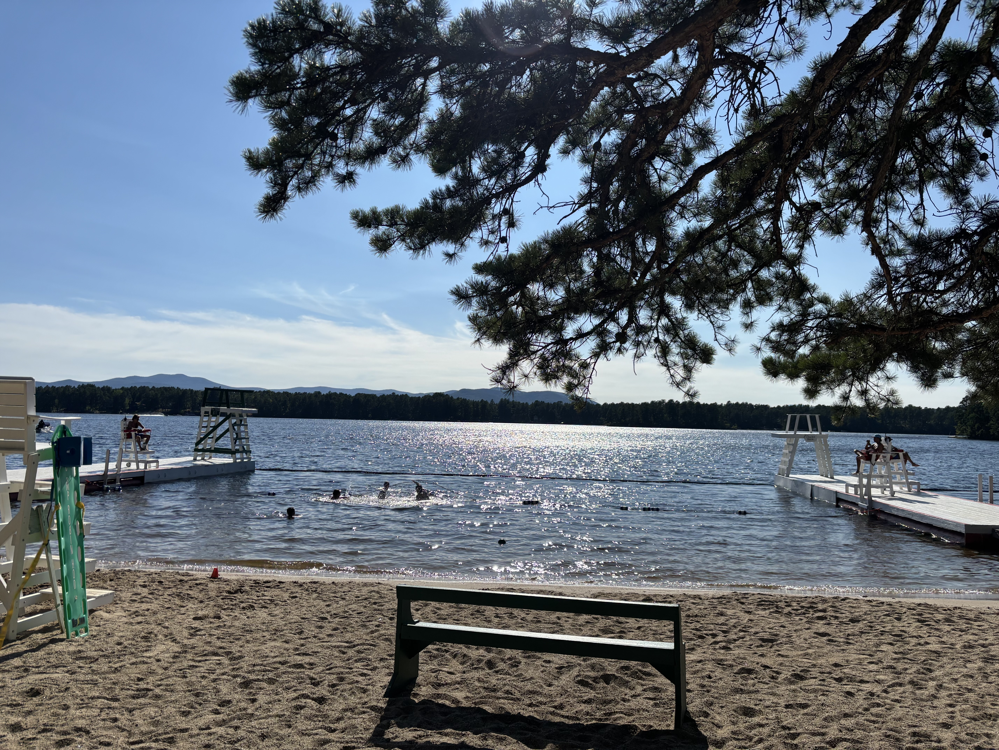

Why This Cause, Specifically
I grew up going to camp on Lake Ossipee, exploring the mountains in the White Mountains, and spent many nights outdoors in New England. It means something to me that New York Road Runners' Team for Climate funds multiple projects supporting forestry in those regions, like the White Mountains Forestry Project and the 100-Mile Wilderness Project. Helping protect these is a big part of why I want to run, and do my part to preserve the outdoors for everyone and generations to come. Running outside is a lot of the reason why I find the sport so special.
